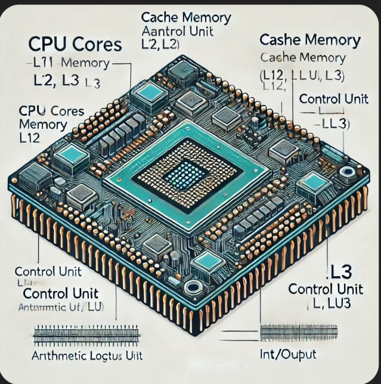

structure du CPU
Le CPU est composé de plusieurs parties clés :
1- Unité de commande (Control Unit, CU) : Dirige le flux des données et gère l'exécution des instructions en coordonnant les opérations avec les autres composants.
2- Unité arithmétique et logique (ALU) : Effectue les opérations mathématiques et logiques.
3- Registres : Mémoire ultra-rapide intégrée, utilisée pour stocker temporairement des données et des instructions pendant le traitement.
4- Cache : Mémoire rapide qui stocke les données fréquemment utilisées pour accélérer l'accès par le processeur.

5- Horloge (Clock) : Synchronise toutes les opérations du CPU avec une fréquence déterminée (GHz).
6- Bus interne : Transfère des données et des instructions entre les différentes parties du processeur.